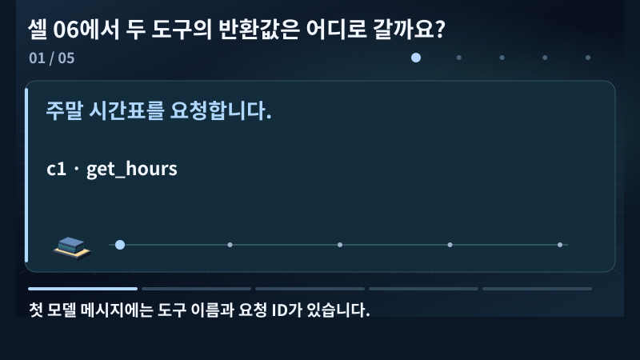
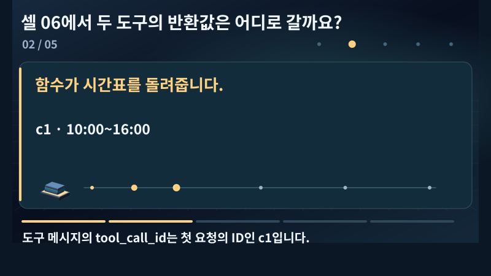
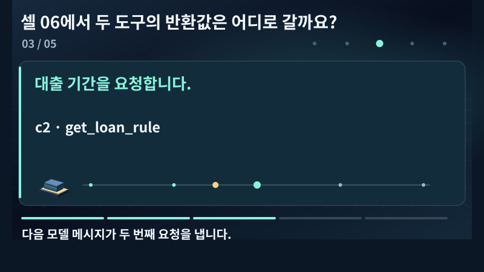
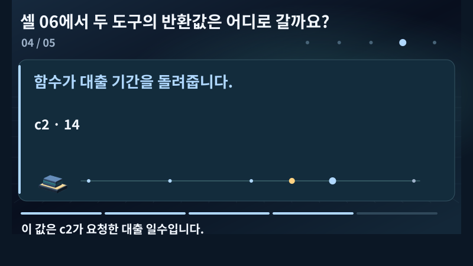
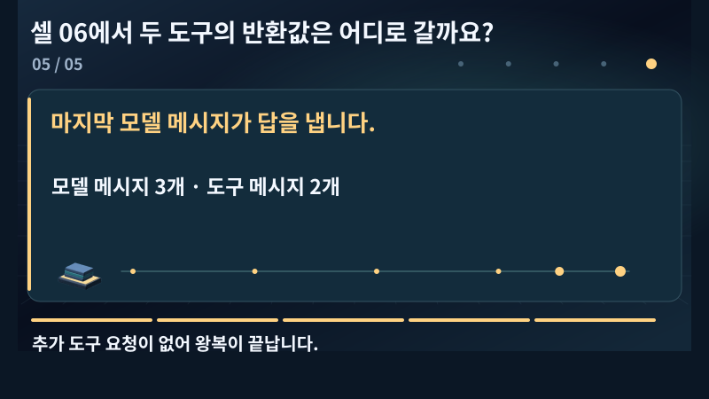

같은 도구로 create_agent에 전환하기
가상 도서관에서 주말 운영 시간과 대출 기간을 함께 물었습니다. 17장에서는 두 함수를 부르는 반복문을 직접 썼습니다. 여기서는 같은 질문을 받은 create_agent의 실행 기록을 읽고 모델이 요청한 일과 도구가 마친 일을 구분합니다.
수업 노트북
실행을 확인한 커널은 Python 3.12.15입니다. 예제에 사용한 외부 패키지는 langchain 1.4.6, langchain-core 1.6.12, langsmith 0.14.11입니다.
모델은 운영 시간을 어떻게 물어볼까요?
‘주말 질문’에서 출발해 ‘운영 시간 도구’를 거친 뒤 ‘10:00~16:00’가 되는 순서를 따라가세요.
운영 시간 질문을 도구에 보내 실제 시간을 가져옵니다.
도구 요청에는 함수 이름과 인자, 결과를 받을 때 사용할 호출 ID가 들어 있습니다. 시간을 알아내는 일은 등록된 함수가 맡습니다. 아래는 대본 모델이 낸 요청을 Python으로 직접 전달해 보는 예입니다.
셀 01 · 주말 운영 시간 조회
요청에 시간표 값이 있는지 먼저 보세요. 조회 뒤 어느 값이 새로 생길까요?
hours = {"weekday": "09:00~18:00", "weekend": "10:00~16:00"}
request = {"name": "get_hours", "args": {"day": "weekend"}, "id": "c1"}
def get_hours(day):
return {"ok": True, "hours": hours[day]}
result = get_hours(**request["args"])
print(result["hours"])실행 결과
10:00~16:00
10:00~16:00은 함수가 시간표에서 꺼낸 값입니다. 요청의 c1은 시간이 들어갈 칸이 아니라 도구 결과를 원래 요청과 짝지을 식별자입니다.
과제 02 · 서로 다른 호출을 연결하기
두 번째 요청 c2의 응답에서 대출 기간을 꺼내세요. 목록 위치 대신 호출 ID를 쓰세요.
replies = {'c1': {'hours': '10:00~16:00'}, 'c2': {'loan_days': 14}}
# c2의 대출 기간을 출력하세요.풀이와 실행 결과 보기
replies = {'c1': {'hours': '10:00~16:00'}, 'c2': {'loan_days': 14}}
print(replies['c2']['loan_days'])실행 결과
14
14는 대출 규정 도구가 반환한 일수입니다. 반환 순서가 달라져도 c2로 찾아낼 수 있습니다.
같은 질문에서 모델은 몇 번 일했을까요?
‘모델 호출’에서 시작해 ‘도구 결과’를 거친 뒤 ‘다시 모델로’에서 다시 판단하는 흐름을 따라가세요.
도구가 돌아온 뒤 답을 쓰기 위한 모델 호출이 이어집니다.
프레임워크 예제 manual_conversion.py에서는 같은 두 함수를 create_agent에 등록하고 invoke로 질문을 넘깁니다. 도구 요청이 오면 프레임워크가 해당 함수를 부르고 결과를 돌려줍니다. 마지막 문장을 쓸 때도 모델이 한 번 더 응답합니다. 여기서는 기존 대본 모델 실행에서 기록한 순서를 읽습니다.
셀 03 · 완료 기록에서 도구 결과 세기
대본에서 나온 메시지 종류입니다. tool이 등장한 수와 ai가 등장한 수를 따로 확인하세요.
roles = ["human", "ai", "tool", "ai", "tool", "ai"]
print(roles.count("tool"), roles.count("ai"))실행 결과
2 3
2 3이 보입니다. 두 번의 도구 요청에 응답한 뒤 세 번째 모델 메시지가 최종 문장을 냈습니다. 이 기록은 고정 대본의 호출 횟수를 보여 주며 외부 모델 요금은 측정하지 않았습니다.
과제 04 · 결과를 받지 못한 요청 찾기
c1과 c2를 요청했지만 c1만 회신했습니다. 회신을 기다리는 ID를 출력하세요.
requested = ['c1', 'c2']
returned = {'c1'}
# 아직 결과가 없는 ID를 찾으세요.풀이와 실행 결과 보기
requested = ['c1', 'c2']
returned = {'c1'}
print([call_id for call_id in requested if call_id not in returned])실행 결과
['c2']
['c2']가 남습니다. 이 상태에서 대출 기간을 확정하면 도구가 주지 않은 답을 쓰게 됩니다.
같은 두 도구를 실제 create_agent에 등록하기
‘시간 조회’와 ‘대출 조회’가 오른쪽의 ‘도구 등록’에 함께 들어가는 위치를 보세요.
두 도구를 같은 에이전트에 등록하고 요청을 따라갑니다.
이 절은 LangChain 1.x 수업 커널에서 실행합니다. 대본 모델은 질문의 의미를 판단하는 대신 정해 둔 순서대로 요청을 냅니다. 도구를 찾아 실행하고 그 결과를 메시지에 붙이는 부분은 실제 LangChain이 맡습니다.
셀 05 · 제공 셀 · 대본 모델 준비
도구 요청을 담은 메시지를 만들 도우미입니다. 다음 셀에서 쓰므로 출력은 없습니다.
from langchain.agents import create_agent
from langchain_core.language_models.fake_chat_models import FakeMessagesListChatModel
from langchain_core.messages import AIMessage
from langsmith import tracing_context
class ClassroomModel(FakeMessagesListChatModel):
def bind_tools(self, tools, **kwargs):
return self # 사용할 도구 요청은 아래 대본에 고정했습니다.
def ask_tool(name, args, call_id):
return AIMessage(content="", tool_calls=[{"name": name, "args": args, "id": call_id}])bind_tools가 대본 모델을 그대로 돌려줍니다. 네트워크나 결제 계정 없이 같은 요청 순서를 반복해서 볼 수 있습니다.
셀 06 · 등록한 두 함수의 실제 왕복
각 도구가 실제로 불렸을 때의 반환값을 호출 ID와 함께 읽습니다.
셀 01의 같은 이름 함수는 사전을 반환해서 hours 키를 읽었습니다. 여기에서 새로 정의하는 도구는 문자열을 돌려줍니다. 메시지에서 호출 ID를 먼저 찾은 뒤 그 ID와 짝을 이룬 ToolMessage의 content를 읽으세요.
def get_hours(day: str) -> str:
"""가상 도서관의 운영 시간을 찾는다."""
return hours[day]
def get_loan_rule() -> str:
"""가상 도서관 대출 일수를 찾는다."""
return "14"
model = ClassroomModel(responses=[
ask_tool("get_hours", {"day": "weekend"}, "c1"),
ask_tool("get_loan_rule", {}, "c2"),
AIMessage(content="주말은 10:00~16:00이며 대출은 14일입니다."),
])
agent = create_agent(model, tools=[get_hours, get_loan_rule])
with tracing_context(enabled=False):
state = agent.invoke({"messages": [("user", "주말 시간과 대출 기간은?")]})
for message in state["messages"]:
if message.type == "tool":
print(message.tool_call_id, message.content)실행 결과
c1 10:00~16:00 c2 14
c1 뒤에 시간, c2 뒤에 14가 찍힙니다. 호출 ID와 내용은 실제로 돌려받은 ToolMessage에서 꺼냈습니다. 이 실습에서는 도구 요청과 마지막 답 문장을 대본에 미리 적었고, 함수의 반환값은 실행 중에 얻었습니다. 도구 결과의 tool_call_id에서 c1과 c2를 찾아 각 반환값을 연결하세요.
셀 06에서 두 도구의 반환값은 어디로 갈까요?
모델 메시지 세 개와 도구 메시지 두 개를 순서대로 따라가세요. 호출 ID를 읽으면 어떤 요청에 온 값인지 알 수 있습니다.
두 도구의 실행 결과가 모델의 다음 호출로 되돌아가는 지점을 보세요.
에이전트가 시간과 기간을 함께 답하려면 두 도구가 돌려준 값을 모두 받아야 합니다.
- 01시간 요청
- 02시간 회신
- 03대출 요청
- 04대출 회신
- 05답변

STEP 01 · 모델주말 시간표를 요청합니다.
첫 모델 메시지에는 도구 이름과 요청 ID가 있습니다.
c1 · get_hours

STEP 02 · 도구함수가 시간표를 돌려줍니다.
도구 메시지의 tool_call_id는 첫 요청의 ID인 c1입니다.
c1 · 10:00~16:00

STEP 03 · 모델대출 기간을 요청합니다.
다음 모델 메시지가 두 번째 요청을 냅니다.
c2 · get_loan_rule

STEP 04 · 도구함수가 대출 기간을 돌려줍니다.
이 값은 c2가 요청한 대출 일수입니다.
c2 · 14

STEP 05 · 모델마지막 모델 메시지가 답을 냅니다.
추가 도구 요청이 없어 왕복이 끝납니다.
모델 메시지 3개 · 도구 메시지 2개
다시 풀어 보기
운영 시간 문장 하나를 골라 함수의 반환값과 요청 ID를 거슬러 올라가세요. 56장에서는 이 왕복의 어느 지점에서 잘못된 값을 막을지 정합니다.
관련 개념 더 읽기
오늘의 질문: 반복문을 프레임워크에 맡기면 무엇이 남을까요?
17일에는 모델의 도구 요청을 읽고 함수를 실행한 뒤 결과를 돌려주는 반복문을 직접 만들었습니다. 34일에는 같은 검색 함수를 Graph의 노드와 조건 간선에 연결했습니다. 오늘은 create_agent에 모델과 도구를 등록하고, 실제 메시지 왕복이 같은 결과를 만드는지 확인합니다.
구현의 길이만 비교하지 않습니다. 어떤 코드가 도구를 고르는지, 누가 실행하는지, 어디에서 멈추는지 설명할 수 있어야 전환 후에도 오류를 찾을 수 있습니다. 제공 코드를 모두 새로 작성하는 수업은 아닙니다. 핵심 호출부를 읽고 대본 한 조건을 바꾸며 관찰합니다.
시작 전 15분: 내가 이어받은 기록 확인
17일 agent-loop/trace.json에서 c1의 요청과 응답을 짝짓고 모델 호출 수와 실제 도구 실행 수를 각각 셉니다. 34일 rag/node-tool-comparison.csv에서는 같은 질문인데도 필수 검색과 선택 검색의 횟수가 달랐던 행을 고릅니다. 파일이 없으면 제공 예시를 사용했다고 진입 기록에 적습니다.
52일 project/demo-and-retrospective.md에서 루프나 Graph를 연결하며 어려웠던 부분과 계속 유지할 출처·오류 규칙을 찾아봅니다. 현재 제공된 52 파일은 빈 양식입니다. 개인·팀의 실제 회고가 없으면 미수신으로 남기고 17·34 제공 사례로 보충합니다. 빈 칸을 가상의 학생 성취로 채우지 않습니다.
39일 채택 기록은 제공 예시로 읽습니다. 실패행을 남기는 방식과 원문 의미 대조를 가져오되, 39의 작은 청크 인덱스를 오늘 원문 3개 비교에 섞지 않습니다.
실행 환경과 파일의 역할
실습은 Python 3.12 환경에서 진행합니다. 확인한 설치 버전은 langchain 1.5.0, langchain-core 1.8.0, langgraph 1.2.22, pydantic 2.14.2, langsmith 0.14.17입니다. 이름이 비슷해도 langchain과 langchain-core는 다른 배포 패키지입니다.
examples 폴더 안에 실행 코드·원문·고정 입력을 모두 넣었습니다. 다른 장의 폴더나 prototype이 없어도 실행할 수 있습니다. 파일을 개별로 받으면 data와 inputs의 하위 경로를 유지합니다. API 키는 필요하지 않습니다.
루프가 사라져도 개발자의 판단은 남습니다
| 책임 | 17 수동 루프 | 34 Graph | 55 create_agent |
|---|---|---|---|
| 도구 목록·인자 검사 | 직접 매핑/검사 | 제공 Tool과 검사 | 등록한 Tool과 검사 |
| 다음 요청 결정 | 대본 SDK 응답 | ScriptedRouter | ScriptedChatModel |
| 요청→실행→응답 | 직접 반복문 | 연결한 노드/간선 | 프레임워크의 도구 루프 |
| 종료 정책 | 직접 상한/오류 처리 | 조건 간선/상한 | middleware와 반환 검사 |
| 근거·의미·비용 확인 | 개발자 | 개발자 | 개발자 |
create_agent는 도구를 등록하고 메시지 왕복을 이어 주는 실행 구조입니다. 모델이 내놓은 tool_calls는 실행 요청이고, 실제 Python 함수 호출은 프레임워크가 수행합니다. system_prompt에 규칙을 적는 것만으로 호출 상한이나 허용 목록이 강제되지는 않습니다.
수동 루프 비교 예제는 17일의 운영 시간 도구와 대출 기간 도구를 그대로 사용합니다. 정상 질문 ‘주말 시간과 대출 기간은?’은 도구 2회·모델 3회로 끝납니다. 이것은 요청 ID·도구 결과·최종 문장의 정상 동등성 비교입니다. 종료 정책 전체가 같다는 뜻도, Q1 검색 성능 비교도 아닙니다.
대본 모델을 연결하는 이유
오늘의 목적은 모델 품질보다 메시지와 실행 정책을 확인하는 것입니다. 같은 순서의 요청을 돌려주는 모델을 쓰면 도구 실행이 한 번 더 일어났는지 정확히 비교할 수 있습니다. 이 모델은 질문을 이해하지 않으며, 키워드를 포함한 질문에 준비된 요청을 보냅니다.
create_agent는 모델의 bind_tools를 호출해 사용할 도구 스키마를 전달합니다. 제공 ScriptedChatModel은 이름을 기록하고 자신을 반환합니다. _generate는 대본에서 다음 AIMessage를 꺼냅니다. 두 메서드는 읽기용 제공 코드이며 오늘 새로 구현할 과제가 아닙니다. 도구 선택 성능이나 토큰 효율을 여기서 추정하지 않습니다.
별도 검색 예제에서 search_documents 한 번 호출하기
checked_search는 검색 결과의 메타데이터뿐 아니라 실제 도구 요청의 k보다 많이 반환했는지도 검사합니다. 바깥 함수의 k가 2여도 도구가 k1을 요청했다면 결과는 최대 1개여야 합니다. 이 검사가 빠지면 같은 입력 비교라는 전제가 깨집니다.
invoke에 HumanMessage를 넣으면 대본이 tool_calls를 냅니다. 프레임워크는 등록한 search_documents를 실행하고 같은 요청 ID를 가진 ToolMessage를 만든 뒤 모델을 다시 부릅니다. 대본의 ‘검색 선택을 마쳤습니다’는 사용자가 받을 최종 답변이 아닙니다. 도구 artifact를 공통 A1으로 보내 별도의 고정 생성 콜백과 인용 검사를 수행합니다.
자료와 질문을 고정한 뒤 비교하기
compare_frameworks.py는 입력 해시를 먼저 검사합니다. 17 보수 생산자의 정상 반환 전체를 대조하고, 35일 고정 Q1 다섯 질문을 34 Graph와 55 create_agent에 똑같이 보냅니다. 원문 3개·k1을 유지하며 documents, result, 검색/생성 횟수와 검색 상태를 비교합니다.
36 기준선은 필수 검색이라 주차·카페에도 검색 1회가 있습니다. 34·55는 대본이 검색을 생략하여 0회입니다. A1 결과가 같아도 실행 경로는 다를 수 있습니다. 이 차이는 주어진 대본 정책으로 생긴 것이므로 실제 LLM이 불필요한 검색을 줄였다고 설명하지 않습니다.
37·39의 작은 청크 실험과 채택 판단은 읽기 근거로 보존합니다. 인덱스가 다른 결과를 한 표의 같은 조건으로 합치지 않습니다. Q1은 개발 3개·공개 확인 2개이며 공개 확인 질문도 이미 제공되어 있습니다.
정상 자료 없음과 실행 오류를 나누기
| 상황 | 기록 | 해석 |
|---|---|---|
| 주차를 검색하지 않음 | not_requested / A1 no_evidence | 선택 정책에 따라 근거 없음 |
| 검색 TimeoutError | error_type=TimeoutError / result=null | 운영 오류; 빈 목록으로 숨기지 않음 |
| k 초과·출처 누락 | data_contract_error / result=null | 검색 계약 위반 |
| 빈/공백 모델 응답 | empty_model_response / result=null | 정상 종료 문장 아님 |
| 명시적 거절 메시지 | model_refusal / result=null | 제공 두 거절 형식 검사 |
| 미검색 ID 인용 | A1 invalid_citation / sources=[] | 답변 인용 검증 실패 |
상한 2로 연속 검색 대본을 실행하면 55에서는 모델 2회·검색 2회 뒤 모델 상한 오류가 납니다. 모델 호출을 제한하는 기본 middleware만으로 마지막 모델 응답 뒤의 도구 실행까지 막는 것은 아닙니다. 56일에는 다음 답변을 받을 예산이 없을 때 새 검색을 막아 모델 2회·검색 1회로 멈추게 합니다.
answered는 공통 인용 형식 검사를 통과했다는 상태입니다. ‘999일 [library-1]’처럼 실제 ID에 틀린 사실을 붙일 수 있으므로 원문 14일과의 의미 대조는 따로 필요합니다. 오류 메시지는 종류만 기록하고 예외 원문을 복사하지 않습니다.
| 필드 | 오늘 확인 범위 |
|---|---|
| model_calls | 실제 대본 모델 진입 수 |
| retrieval_calls | 검색 함수 진입 수; 실패 시도 포함 |
| generation_calls | A1의 로컬 생성 콜백; 모델 호출과 합산 금지 |
| external_llm_calls / monetary_cost | 확인된 기본 로컬 경로는 0; 사용자 주입은 null |
| provider_usage | 미측정 null; 대본으로 토큰 추정하지 않음 |
과제: 한 조건을 바꾸고 책임을 설명하기
| 기준 | 판정 방법 |
|---|---|
| 책임·메시지 대응 | 코드/관찰과 설명이 맞으면 근거충족 |
| 같은 조건의 비교 | 실행 또는 근거가 없으면 미확인 |
| 실행 모드·실패·출처 | 오류/미측정을 성공으로 해석하면 수정필요 |
다음 장으로 넘길 것
56일에는 등록한 도구 이름·Strict 입력 스키마·A1 결과·메시지 기록·호출 수·모드를 넘깁니다. agent/framework-comparison.md와 본인 runs 기록을 함께 보관합니다. 다음 장은 구조화 초안과 실행 Context, 허용 목록·상한을 연결합니다. Skill·기억·MCP·웹 서버를 오늘 미리 구현하지 않습니다.